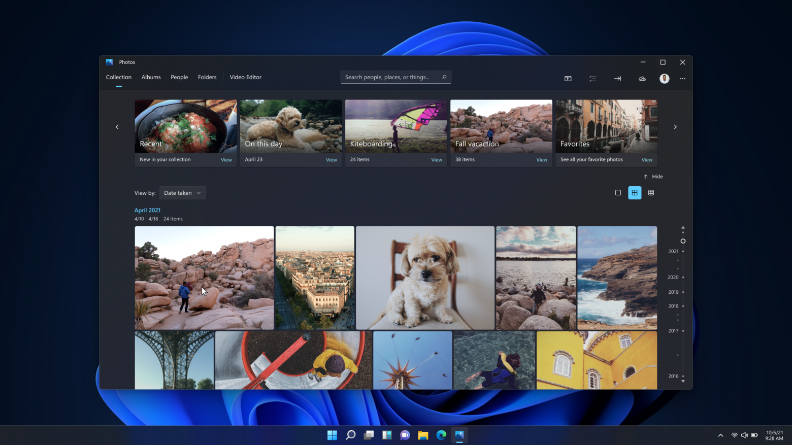
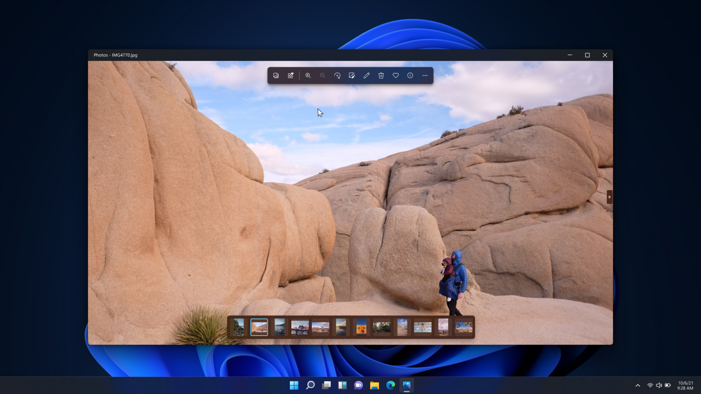
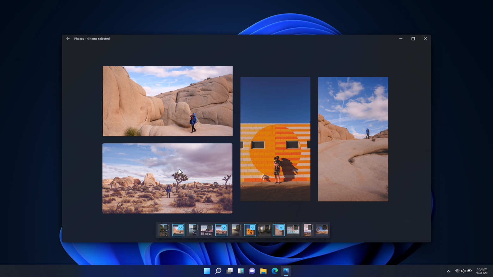
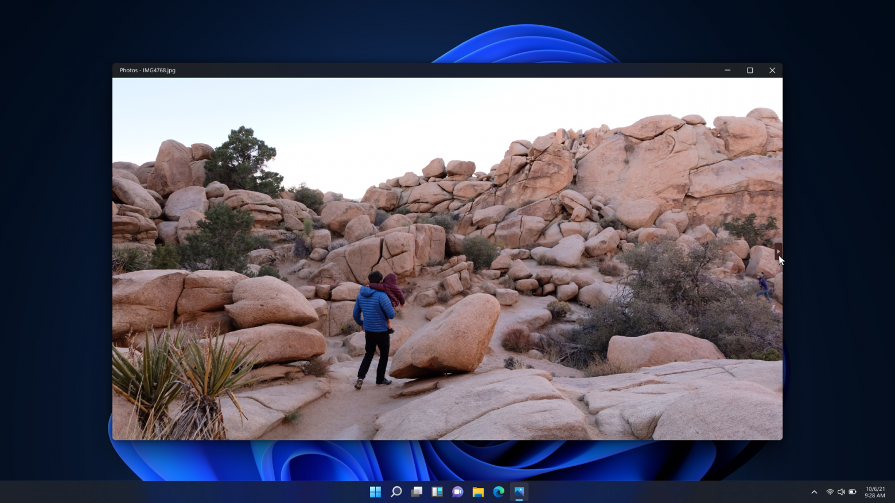
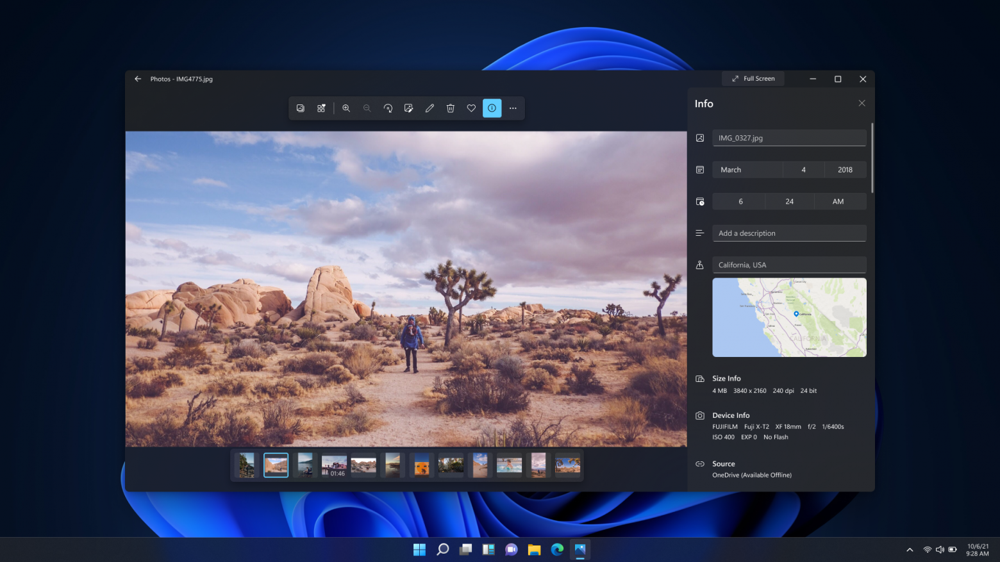

Microsoft представила редизайн приложения Photos для Windows 11
Microsoft представила обновлённое приложение для просмотра и обработки фото и видео в Windows 11. 7 сентября о редизайне в своём микроблоге рассказал один из разработчиков компании. Новинку могли протестировать только некоторые участники программы Insider. 16 сентября компания выпустила официальный пресс-релиз и начала распространять обновление среди большего числа инсайдеров

Как указано в пресс-релизе, компания поставила целью ускорить и упростить пользовательский опыт при работе с приложением. В первую очередь разработчики существенно изменили дизайн, чтобы он сочетался с Windows 11. Они добавили закруглённые углы окон и новые тематические палитры.
Внизу окна разработчики добавили раскадровку для быстрой навигации. Она включает все файлы из папки или альбома, в котором находится открытое фото или видео.

Также в Photos появилась опция Multi-View для одновременного просмотра нескольких фотографий. Для её активации необходимо выбрать несколько файлов из раздела с раскадровкой.

Панель инструментов в окне теперь можно полностью скрыть, чтобы просматривать видео и изображения на всю ширину окна.

В Photos добавили панель быстрого редактирования изображений, включающую функции вращения, кадрирования, рисования и не только. Также приложение поддерживает сторонние редакторы, такие как Adobe Photoshop Elements, Corel PaintShop Pro или Affinity Photo. Попасть в них можно напрямую через контекстное меню

Microsoft представила Windows 11 в июне этого года. По словам компании, новая система получила современный интерфейс, обновлённый дизайн, доработанный магазин приложений, улучшенную анимацию, новое меню Пуск, панель уведомлений, Проводник и не только. Также в неё добавлены новые функции и возможности для удалённой работы и расшаривания контента, более качественные и меньшие по объёму обновления (на 40% меньше), улучшенная система безопасности и не только.
Windows 11 выйдет 5 октября этого года. Пользователи с Windows 10 смогут обновить её бесплатно.